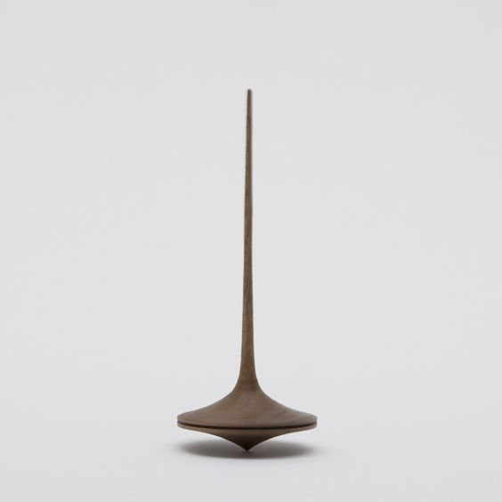
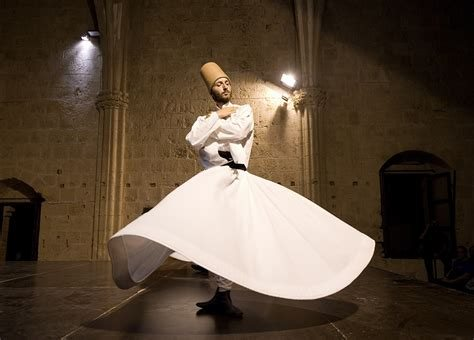
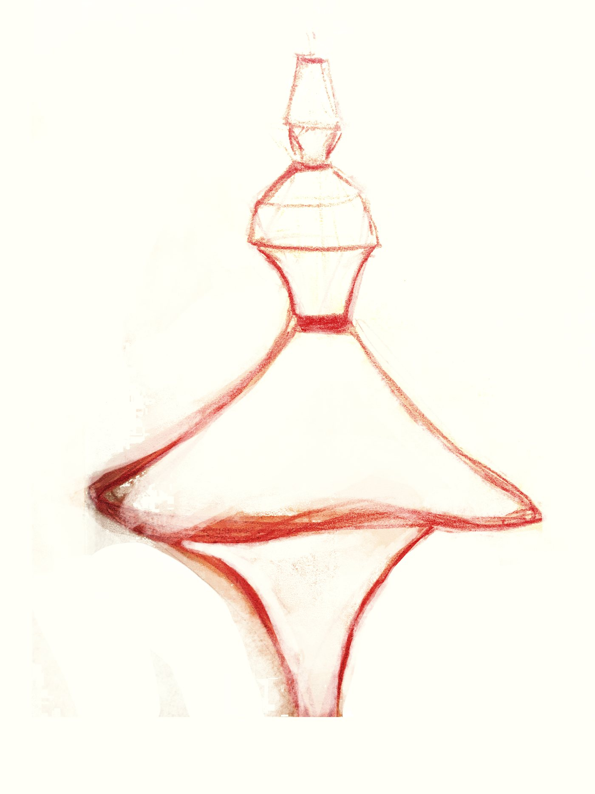
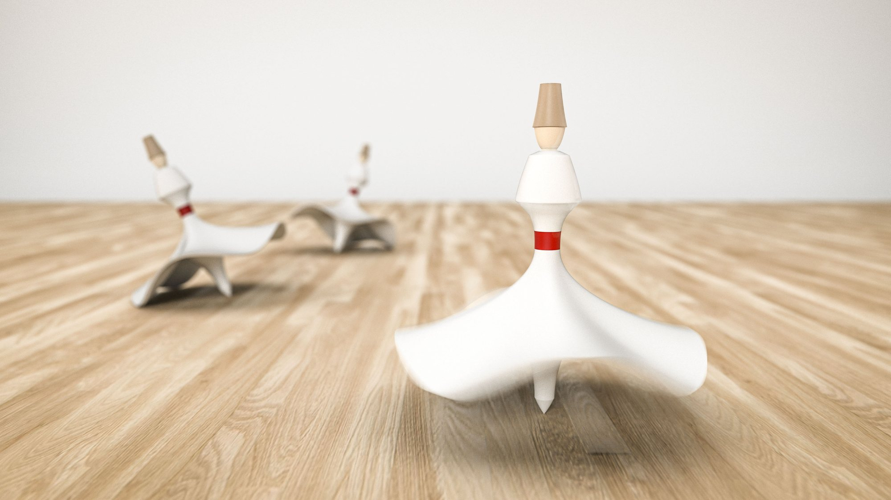
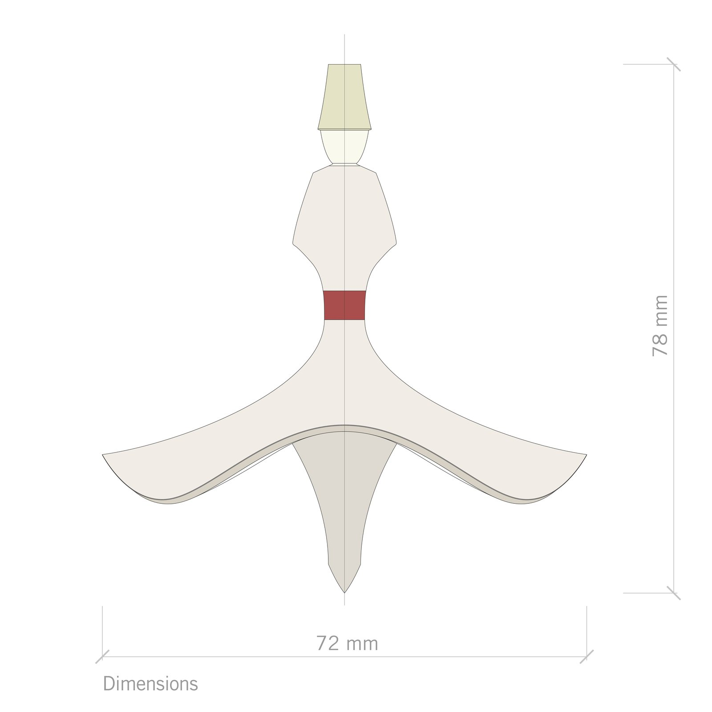

Whirling Dervish
A spinning top inspired by the Sufi dancers of Turkey
About
A children's toy born out of a sketching exercise during my undergraduate studies. The whirling dervish dancers of Turkey have a distinctive silhouette, the wide, spinning skirt, that immediately suggested the form of a traditional spinning top. I wanted to see how directly that translation could be made.


Design Process
The idea started as a quick sketch, followed by reference gathering on both spinning top forms and the visual language of the dancers.
The sketch was refined in Photoshop, then modelled in Rhino and rendered in Keyshot.



Reflection
This was a small, simple project I worked on while studying industrial design. It was never intended for production, but it remains one of my favorites because of the simple beauty of the object, and because it was one of the first things that I felt like I “designed”.